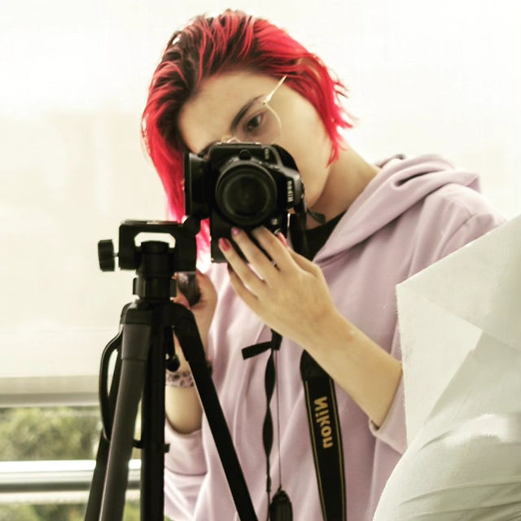

Testimonios
Leonardo Moreno Moncaleano
Conozco a Jacky desde que tenía 18 años. He sido testigo de su evolución artística desde sus primeros bocetos hasta sus obras más maduras. Su pasión por el arte, tanto análogo como digital, es innegable. Sus obras, cargadas de simbolismo y una profunda introspección, revelan una artista en constante búsqueda de nuevas expresiones. Doy fe de que ella imprime en cada una de sus creaciones una parte de su alma, lo que resulta en obras emotivas y nostálgicas que conmueven al espectador. Siempre he disfrutado colaborando con ella debido a su talento innato y a la originalidad de sus ideas. Agradezco mucho a la vida por su amistad pues en épocas muy difíciles de existencialismo personal me ha apartado de la soledad y me ha hecho ver caminos distintos. Diseñador Gráfico Egresado de la Universidad Jorge Tadeo Lozano.

Wendy Giselle Giraldo García
Conozco a Jackeline mateus hace aproximadamente 7 años , trabajamos juntas, y desde entonces hemos mantenido una relación de amistad puesto que se caracteriza por ser una persona responsable, honesta, trabajadora y puntual , trabaja muy bien en equipo, es amable, cariñosa, muy creativa y tiene mucha iniciativa. también tiene habilidad para establecer relaciones fuertes y perdurables , realiza con eficiencia e ímpetu todo lo que se propone con un alto interés por aprender cada día cosas nuevas para nutrir sus multiples talentos. Emprendedora
Carlos Mateo Ruano Pescador
Soy fiel amigo cercano de Jackeline Angulo Mateus, por lo que doy fe de la gran persona que es, siendo reconocida por su gran carisma, alegría, inteligencia, creatividad, tolerancia, perseverancia y muchas mas cualidades que la representan y que se quedan cortas ante el gran ser humano que es y que llegará a ser en su camino en esta vida. Finalmente como persona que la ha acompañado durante varios años, estoy y estaré eternamente agradecido por tenerla como mi mejor amiga y no hay nada más que buenas palabras para describirla hoy y siempre. estudiante de derecho de la Universidad Católica de Colombia

Angie Mariana García Barrero
Jackeline es una persona con una creatividad y visión artística única. Su capacidad para abordar proyectos desde diferentes perspectivas y encontrar soluciones innovadoras es impresionante. Su compromiso con el trabajo es total, siempre se esfuerza por entregar resultados de alta calidad y se mantiene en constante aprendizaje de nuevas técnicas, resaltando su ambición por superarse y su compromiso con una ejecución en arte y diseño impecables. No obstante, lo que realmente destaca a Jackeline, en mi opinión, es su conjunto de habilidades blandas. Es una persona con una excelente receptividad, capacidad de liderazgo y lealtad. Siempre está dispuesta a escuchar y a pensar en soluciones dentro y fuera del entorno laboral. En resumen, doy fe no solo de las habilidades laborales de Jackeline, sino también de su carácter y personalidad. Es una persona excepcional que siempre dará lo mejor de sí misma en cualquier proyecto o desafío que se le presente. La recomiendo sin duda alguna para cualquier oportunidad laboral o colaboración. Comunicadora Audiovisual y Multimedios
